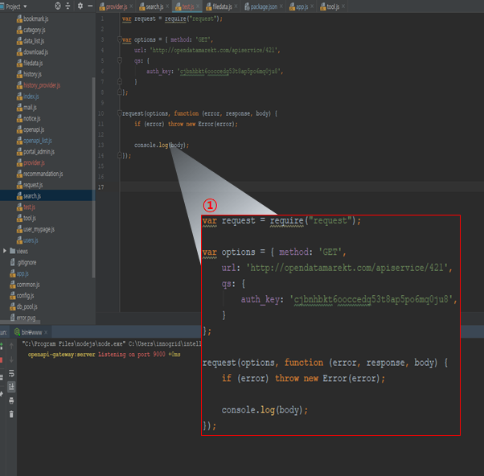
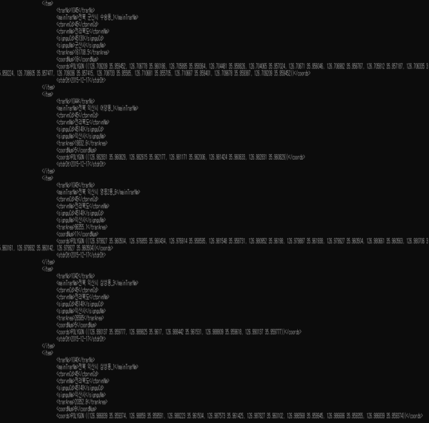

MSA.공동주택 공시가격정보 제공
개발 개요
마이크로서비스 스튜디오와 오픈데이터API 포털을 활용하여 공동주택 공시가격을 지도상에 선택한 위치에 제공하는 사이트 개발 시 활용 방법에 대해 설명한다.
공동주택 공시가격은 국토교통부 또는 공공데이터 포털에 OPEN API로 제공하고 있으며 지도상에 선택한 위치정보를 확인하기 위한 국토교통부의 지도 좌표 정보를 활용한다.
오픈데이터API 포털은 여러 API를 한곳에서 신청하고 승인받을 수 있어서 보다 편리하게 이용할 수 있다. 접속계정이 없다면 오픈데이터 API 포털 사이트에 회원으로 가입한다.
[애플리케이션 개발 프로젝트는 마이크로서비스 기반 개발을 위해 주요 기능을 분할하여 각각의 앱으로 개발을 수행한다. 여기에서는 프론트엔드앱과 백엔드앱 각각 1개씩 개별 개발하여 구축하는 순서로 설명한다.]
공동주택 공시가격 제공 사이트 애플리케이션에서 제공하는 주요 기능은 아래와 같다.
주요 기능 단위로 마이크로서비스 분할하기
- FRONTEND : 네이버(또는 다음) 지도위에서 선택한 위치에 포함된 공동주택 목록을 조회할 수 있어야 하고 해당 공동주택을 선택하면 공시가격을 제공해준다.
- 공동주택 공시가격 : 국토교통부에서 제공하는 공동주택 단지 목록 정보에 대한 위치정보와 가격정보를 검색할 수 있는 기능을 개발하고 API를 정의한다.
- 지도좌표정보 : 국토교통부에서 제공하는 지도상의 좌표는 민간 기업 또는 위경도 정보 표기가 달라 그대로 적용할 수 없는 단점이 있다. 국토부 지도좌표를 일반 지도의 좌표로 쉽게 변환해주는 API
공동주택의 공시가격 정보를 지도상에서 쉽게 찾을 수 있도록 프론트엔드와 백엔드 앱을 분할하고 또한 다음지도와 같은 민간에서 제공하는 지도에서 위치를 쉽게 선택할 수 있도록 좌표 변환은 별도의 API로 개발하여 필요시 반복적으로 개발하지 않고도 활용할 수 있도록 구성한다.
주요 사용 API 목록
공공데이터포털 또는 국토교통부에서 제공하는 공시가격 정보와 PNU코드를 이용한 공동주택의 위치 및 단지 상세정보를 통해서 지도상에 선택한 위치에 있는 공동주택의 공시가격 정보를 제공해주는 웹사이트를 개발한다.
- 공시가격조회 API, PNU 조회, PNU별 공동주택 조회
- 다음지도API
마이크로서비스 스튜디오 활용 절차
마이크로서비스 기반 개발을 위한 다양한 방법이 존재하지만 마이크로서비스 스튜디오를 활용하여 개발하려면 적용 프로세스을 이해하고 적용해야 한다.
- 마이크로서비스 단위로 앱 분할. 기본적인 마이크로서비스 단위 분할 패턴을 적용하여 분할한다. 본 튜토리얼의 연관 문서로 제공하는 '마이크로서비스 개요' 부분을 참조한다. 마이크로서비스 개요]
- 서비스 브로커 활용 개발인 경우 PaaS-TA 로그인 후 서비스 인스턴스를 생성한 후 서비스 인스턴스 접속정보를 확인한다. [서비스 인스턴스 생성]
- 자체 IDE 활용하거나 eclipse 을 이용하는 경우 PaaS-TA에서 plugin을 제공하고 있으니 환경을 설정하여 준비한다. eclipse plugin 설치 방법은 PaaS-TA 3.5 가이드를 참조한다. [Open PaaS 개발환경 사용가이드]
- 코딩
- 마이크로서비스 개발 가이드(Microservice Studio 페이지의 DocS 메뉴 참조)를 참조하여 필수 체크 항목 및 추가되는 내용을 적용한다. 만약 가이드를 따르지 않으면 마이크로서비스 앱 간의 연동된 부분(API 등)의 정보를 정확하게 가져오지 못한다.
- 마이크로서비스 앱 간의 API 연동이 필수이므로 각 각 앱에 적용할 API를 위한 필수 체크 항목을 반드시 적용한다.
- PaaS-TA에 개발된 앱을 마이크로서비스 단위별로 각각 PUSH한다. PUSH 과정에서 msa 환경변수를 정의하거나 PUSH완료 후에도 환경변수 변경은 가능하다. 앱 PUSH 방법은 아래 세가지를 제공한다.
- PaaS-TA 포털을 통한 앱 PUSH
- CF CLI을 통한 앱 PUSH --> 재배포 시에는 반드시 CF CLI을 이용해야 한다.
- eclipse Plugin을 통한 eclipse에서 Open PaaS 서버를 연동한 push --> 재배포 가능
- 환경변수 msa = yes 를 추가한다. (yaml 파일에 정의하거나 또는 PUSH 후)
- 마이크로서비스 스튜디오 페이지 접속 --> PaaS-TA 로그인 계정과 동일
- 마이크로서비스 스튜디오를 통해 마이크로서비스를 추가한다.
- PaaS-TA에 PUSH된 앱 목록과 PaaS-TA에 등록된 서비스를 활용하여 마이크로서비스를 구성한다.
- API 공개는 선택적 기능으로 개발이 완료된 마이크로서비스를 다른 사용자에게 공개하고자 하는 경우에 사용한다.[마이크로서비스 사용자 가이드](https://github.com/startupcloudplatform/Sample-App-Tutorial/blob/master/microserviceuser.md]
마이크로서비스 기반 개발
마이크로서비스 기반으로 개발을 위해 제공하는 서비스를 비지니스 영역, 데이터베이스 종속성 등을 고려하여 분할한다. 여기에서는 향후 확장할 서비스를 포함하여 총 3개의 앱으로 분할하여 개발한다고 간주한다.
사용자 UI제공을 위한 프론트앤드 앱과 창업지역 찾기 정보를 제공하는 백엔드 앱을 우선 개발영역으로 본다.

백엔드앱 개발
공동주택 공시가격 API 및 PNU 정보 API 호출
1) 공동주택가격 WFS 조회

- 1. 예제로 제공된 코드를 개발자가 필요한 부분에 입력 및 파싱한 화면
2) API 실행 결과 화면

- 1. 개발자가 입력 및 파싱 수행 한 결과 화면
공동주택 공시가격 API 상세
API 목록
| URL | 파라미터 | 설명 |
|---|---|---|
| /api/public/pnu/building | lat1, lng1, lat2, lng2 | 두점을 통한 위경도 조회 API |
| /api/public/value/building | pnu | PNU를 통한 건물 가격 정보 조회 API |
| /api/public/value/building/unit | pnu | pnu를 통한 평당 가격 정보 조회 API |
프론트엔드 앱 개발
본 튜토리얼은 eclipse 4.10.0을 기준으로 작성되었으며 PaaS-TA 에서도 WEB IDE를 제공하고 있으며 활용이 가능하다. 다른 익숙한 IDE를 활용해도 무방하다.
개발 환경 요구사항
| 요구사항 | 버전 |
|---|---|
| AngularJS | |
| Java | 1.8 |
| Spring Boot | 1.5.9 |
| Spring Cloud | 1.6.1 |
| swagger API | 2.0.0 |
Open API 게이트웨이 시스템
공동주택 공시가격 조회( http://203.245.1.104:3000/ )
Open PaaS
PaaS-TA 3.1, 3.5(Penne)
https://guide.paas-ta.kr/guide-3.5-penne
eclipse IDE 환경 구성
여기에서는 eclipse 4.10 버전을 이용하여 프로젝트 생성하는 방법을 설명한다. Eclipse에서 Maven project를 생성하고 JAVA 1.8을 적용한다.
eclipse IDE에서 프로젝트를 직접 생성하려면 Project Explorer에서 마우스 우클릭 후 New > Project.. 을 선택한다. Maven Project을 선택하면 기본 Maven 환경이 구성된다. (사전에 Maven 설치가 완료되어 있어야 한다.)
Maven Project 생성 시
- GroupId : com.example.sample 로 등록한다.
- ArtifactId : frontend
- Package : com.example.sample 로 등록한다.
Java 필수 항목 코딩
마이크로서비스 앱 개발은 여러 개의 앱을 구성하여 구동하는 방식으로 개발 환경 설정 시 여러 필수 체크 부분이 존재한다. 특히, JAVA Spring cloud 기반 코딩을 위한 dependency를 정의한다. 기본으로 pom.xml 파일이 생성되었을 것이다. 이 파일을 오픈하고 아래 내용을 붙여넣기 한다.
pom.xml 파일 수정
초기 환경 구축 시 pom.xml에 마이크로서비스 앱 개발을 위한
<parent>
<groupId>org.springframework.boot</groupId>
<artifactId>spring-boot-starter-parent</artifactId>
<version>1.5.9.RELEASE</version>
<relativePath/> <!-- lookup parent from repository -->
</parent>
<properties>
<project.build.sourceEncoding>UTF-8</project.build.sourceEncoding>
<project.reporting.outputEncoding>UTF-8</project.reporting.outputEncoding>
<java.version>1.8</java.version>
<spring-cloud.version>Edgware.RELEASE</spring-cloud.version>
</properties>
java spring cloud 기반 코딩을 위한 필수 dependency 정의를 위해 아래 내용을 복사하여 pom.xml에 붙여넣기 한다.
<dependencies>
<!-- required start -->
<dependency>
<groupId>org.springframework.cloud</groupId>
<artifactId>spring-cloud-starter-config</artifactId>
</dependency>
<dependency>
<groupId>org.springframework.cloud</groupId>
<artifactId>spring-cloud-starter-eureka</artifactId>
</dependency>
<dependency>
<groupId>org.springframework.boot</groupId>
<artifactId>spring-boot-starter-actuator</artifactId>
</dependency>
<dependency>
<groupId>org.springframework.cloud</groupId>
<artifactId>spring-cloud-starter-hystrix</artifactId>
</dependency>
<dependency>
<groupId>io.springfox</groupId>
<artifactId>springfox-swagger2</artifactId>
<version>2.3.1</version>
</dependency>
<dependency>
<groupId>org.springframework.boot</groupId>
<artifactId>spring-boot-starter-test</artifactId>
<scope>test</scope>
</dependency>
<dependency>
<groupId>io.pivotal.spring.cloud</groupId>
<artifactId>spring-cloud-services-cloudfoundry-connector</artifactId>
<version>1.6.1.RELEASE</version>
</dependency>
<dependency>
<groupId>io.pivotal.spring.cloud</groupId>
<artifactId>spring-cloud-services-spring-connector</artifactId>
<version>1.6.1.RELEASE</version>
</dependency>
<!-- required end -->
</dependencies>
annotation 정의를 위한 Java 클래스 생성
java 프로젝트 생성 후 디폴트로 생성된 App.java 파일에 annotation을 정의한다. annotation은 java spring cloud 의 eureka 기능 사용과 rest api 명세를 위한 swagger 필수 annotation 이다. App.java의 기존 내용을 모두 삭제하고 아래 내용을 복사하여 붙여넣기 한다. (소스코드로 배포한 파일에는 클래스이름이 SampleApplication.java로 되어 있음.)
@EnableDiscoveryClient, @EnableCircuitBreaker, @EnableSwagger2
package com.example.sample.front;
import org.springframework.boot.SpringApplication;
import org.springframework.boot.autoconfigure.SpringBootApplication;
import org.springframework.cloud.client.circuitbreaker.EnableCircuitBreaker;
import org.springframework.cloud.client.discovery.EnableDiscoveryClient;
import org.springframework.cloud.client.loadbalancer.LoadBalanced;
import org.springframework.context.annotation.Bean;
import org.springframework.context.annotation.Configuration;
import org.springframework.web.client.RestTemplate;
import springfox.documentation.builders.PathSelectors;
import springfox.documentation.builders.RequestHandlerSelectors;
import springfox.documentation.spi.DocumentationType;
import springfox.documentation.spring.web.plugins.Docket;
import springfox.documentation.swagger2.annotations.EnableSwagger2;
@EnableDiscoveryClient
@SpringBootApplication
public class App {
@LoadBalanced
@Bean
RestTemplate restTemplate() {
return new RestTemplate();
}
public static void main(String[] args) {
SpringApplication.run(App.class, args);
}
}
@Configuration
@EnableSwagger2
class SwaggerConfig {
@Bean
public Docket api() {
return new Docket(DocumentationType.SWAGGER_2)
.select().apis(RequestHandlerSelectors.any())
.paths(PathSelectors.ant("/api/**"))
.build();
}
}
@EnableDiscoveryClient // Service Discovery 정의
Eureka 서버가 서비스를 탐색할 때 사용한다. 서비스 검색(Service Discovery)은 마이크로서비스 기반 아키텍처의 핵심 기술요소로 각 클라이언트 또는 일부 형식을 수동으로 구성하는 것은 매우 어려울 수 있다. Eureka는 Netflix 서비스 검색 서버 및 클라이언트로 서버는 등록된 서비스에 대한 상태를 다른 서버로 복제하여 각 서버가 HA(고가용성) 구성 및 배치를 할 수 있다 Eureka client설정: Eureka Server가 작동하고 있는 상태에서 Eureka client를 시작하면 Eureka Server의 Registry에 등록된다. @EnableDiscoveryClient을 활성화시킨 상태에서서 RestTemplate Bean 에 @LoadBalanced만 달아주면 모든 설정을 Spring Boot에서 자동으로 해준다.
@LoadBalanced // Netflix Ribbon을 자동 적용,
Service Discovery을 IP대신 찾아서 서비스이름으로 사용할 수 있다. 마이크로서비스 환경에서 효과적으로 사용하기 위해서는, @LoadBalanced 어노테이션을 사용해야 한다. 이 annotation으로 인하여, Netflix Ribbon을 자동적으로 사용할 수 있게 되고, 서비스 발견을 IP대신 서비스 이름으로 할 수 있게 된다.
@EnableSwagger2 // swagger API 정의
Swagger2는 RESTful 웹 서비스 용 REST API 문서를 생성하기 위해 사용되는 오픈 소스 프로젝트이다. 웹 브라우저를 통해 RESTful 웹 서비스에 액세스 할 수 있는 사용자 인터페이스를 제공한다. Spring Boot 애플리케이션에서 Swagger2를 사용하려면 dependency을 추가해야 한다. 앞에서 설명한 pom.xml 에 추가한다.
<dependency>
<groupId>io.springfox</groupId>
<artifactId>springfox-swagger2</artifactId>
<version>2.3.1</version>
</dependency>
manifest.yml 생성하기
PaaS-TA에 앱을 푸시할때 사용하는 환경설정 파일이며 manifest.yml 이름으로 생성한 후 아래 내용을 복사한 후 붙여넣기 한다.
필수 환경설정변수 : msa
---
applications:
- name: front
memory: 1G
path: target/front-0.0.1-SNAPSHOT.jar
env:
msa: yes
application.properties 생성하기
마이크로서비스 앱 이름 정의하는 파일로 application.properties 이름으로 생성한다.
소스코드 경로 : src/main/resources/application.properties
spring.application.name=front
RestController 정의
마이크로서비스는 여러 앱을 API로 연동되어 있기 때문에 controller를 정의해야 한다.
package com.example.sample;
import org.json.simple.parser.ParseException;
import org.springframework.beans.factory.annotation.Autowired;
import org.springframework.beans.factory.annotation.Value;
import org.springframework.cloud.context.config.annotation.RefreshScope;
import org.springframework.http.*;
import org.springframework.util.Base64Utils;
import org.springframework.web.bind.annotation.GetMapping;
import org.springframework.web.bind.annotation.RequestParam;
import org.springframework.web.bind.annotation.ResponseBody;
import org.springframework.web.bind.annotation.RestController;
import org.springframework.web.client.RestTemplate;
import org.springframework.web.util.UriComponents;
import org.springframework.web.util.UriComponentsBuilder;
@RestController
REST API는 외부에서 정해진 호출 방식으로 특정 URI를 통해서 사용자가 원하는 정보를 제공하는 방식이다. REST 방식의 서비스 제공이 가능한 것을 Restful이라고 한다.
@RestController
@RefreshScope
public class TestCntroller {
@Autowired
private RestTemplate searchClient;
//마이크로서비스 config쪽에서 basic auth정보 가져오는 부분
//spring apllication property 문법 참조
@Value("${gateway.basic.user: }")
String user;
@Value("${gateway.basic.password:}")
String password;
Object responseReturn = null;
//HttpHeader를 BasicAuth추가하는 함수
private HttpHeaders getHeaders(){
String basicAuth = String.format("%s:%s", user, password);
String base64Auth = Base64Utils.encodeToString(basicAuth.getBytes());
HttpHeaders headers = new HttpHeaders();
headers.setContentType(MediaType.APPLICATION_JSON);
headers.add("Authorization", String.format("Basic %s", base64Auth));
postConstruct();
return headers;
}
}
마이크로서비스 기반 개발을 위한 해당되는 클래스, pom.xml, application.properties 등의 기본적인 정의가 완료되었다면 나머지 코딩은 개발자가 원하는 내용에 따라 달라질 수 있어 본 문서에서는 샘플앱에 포함된 다른 클래스에 대한 설명은 생략한다.
필수 정의항목과 나머지 코딩이 완료되면 PaaS-TA 서버와 연동하여 앱을 배포하거나 개별로 빌드를 수행한 후 빌드된 파일을 이용하여 PaaS-TA 에 배포해도 된다.
PaaS-TA에 앱 배포하기
코딩이 완료된 소스를 Maven Build를 이용하여 .jar를 생성한다. 생성된 .jar 파일을 PaaS-TA에 push한다. PaaS-TA를 이용할 수 있는 환경에서는 포털사이트를 통해서도 앱 push가 가능하다. 여기에서는 Cloud Foundry Cli를 통해서 Push 하는 방법을 설명한다.
PaaS-TA 포털 로그인
접속 가능한 PaaS-TA 사용자 포털을 이용하여 앱을 푸시할 수 있다. 계정을 갖고 있다면 포털 로그인이 가능하다.
CF Login
PaaS-TA 계정을 갖고 있다면 Cloud-Foundry 접속 경로를 통해서 로그인한다.
$ cf login -a 접속URI --skip-ssl-validation
API endpoint: 접속URI
Email>계정
Password>비밀번호
Authenticating...
OK
Targeted org system
Targeted space paas-ta
API endpoint: https://api.k-cloud.org(API version: 2.116.0)
User: admin
Org: system
Space: paas-ta
앱 Push
소스코드 경로로 이동하고 앱 push 명령어를 입력하여 앱을 push한다. 이때, manifest.yml이 정의되어 있는지 확인한다. PaaS-TA 앱 push를 위해서는 이 파일이 필수이다.
$ cf push startup
buildpack호출 과정과 Configuration 설정과정을 거쳐 앱이 컨테이너에 push된다. 앱이 정상적으로 push되었는지 확인한다.
$ cf app startup
Showing health and status for app startup in org Org1 / space DEV as admin...
name: startup
requested state: started
routes: uvaj4b89pd.k-cloud.org
last uploaded: Fri 26 Apr 16:36:37 KST 2019
stack: cflinuxfs2
buildpacks: java_buildpack-v4-15
type: web
instances: 1/1
memory usage: 1024M
state since cpu memory disk details
#0 running 2019-04-26T07:37:07Z 0.2% 217M of 1G 183M of 512M
환경변수 정의
manifest.yml 파일에 정의된 사용자정의 환경변수가 정의되어 있는지 확인한다.
$ cf env startup
결과 예시
{
"VCAP_APPLICATION": {
"application_id": "13e72952-9128-4406-b5a1-a0927952512a",
"application_name": "startup",
"application_uris": [
"uvaj4b89pd.msxpert.co.kr"
],
"application_version": "e1b5522f-23df-48c0-8003-8e67867c31d7",
"cf_api": "https://api.k-cloud.org",
"limits": {
"disk": 512,
"fds": 16384,
"mem": 1024
},
"name": "startup",
"space_id": "46ad022f-bf06-43c9-b2f8-1d4809c96daf",
"space_name": "DEV",
"uris": [
"uvaj4b89pd.k-cloud.org"
],
"users": null,
"version": "e1b5522f-23df-48c0-8003-8e67867c31d7"
}
}
User-Provided:
msa: true